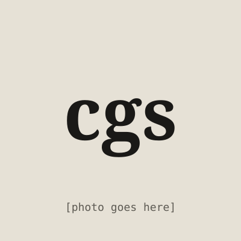

Hi, I'm
Charles Gian Santos
Too long? Shorten it the way SnipURLnk would.
I like building tech stuff.
CS student at UP Los Baños and DOST-SEI scholar. Lately: a URL shortener that refuses unsafe links, and a solver that prices electricity on the Luzon grid.
Email meThings I've built
About me

I'm a computer science student at UP Los Baños and a DOST-SEI scholar. I learn best by building: taking a problem apart until I understand how it really works, then shipping something people can click on.
SnipURLnk started as "how hard can a URL shortener be?" and turned into 104 pytest tests, rate limiting behind a proxy, and a deploy on a free plan. Luzon Grid Dispatch made me write the simplex method by hand instead of calling a library.
When I'm not coding, I'm playing trading card games or multiplayer games, usually with rock or metal playing in the background.
What I build with
- Languages
- Python, Java, C, R, SQL, JavaScript, HTML & CSS
- Frameworks
- Flask, Shiny, pytest
- Data
- PostgreSQL on Neon, SQLite
- Tools
- Git & GitHub, Render, VS Code, Eclipse, RStudio
So far
- Oct 2026Built and deployed SnipURLnk on Render
- Oct 2026Cybersecurity certificate, Asian Development Bank Institute
- 2026Field enumerator and data encoder, UPLB BIDANI Network Program
- 2026CMSC 150 final project: Luzon Grid Dispatch
- 2025BS Computer Science, UP Los Baños (DOST-SEI scholar)
- 2025Administrative assistant intern, PrimeWater
- 2019–25Tagaytay City Science National High School, with highest honors
Got a thing that needs building?
Internships, freelance work, or a side project you want a second pair of hands on. Email is the fastest way to reach me.